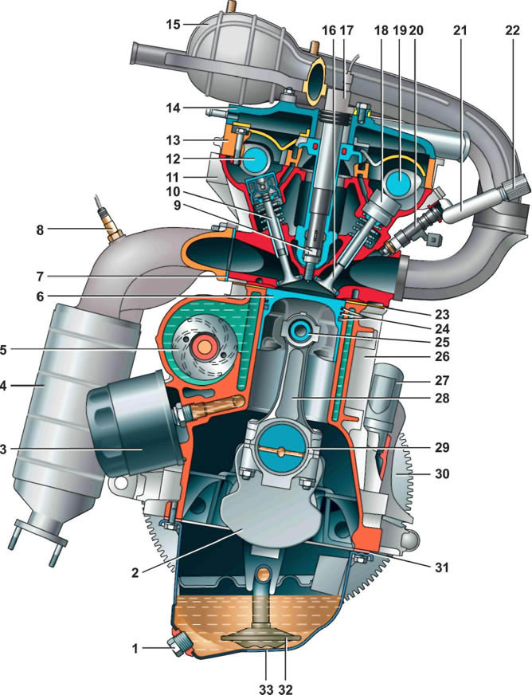

Двигатель 1,4i
Блок цилиндров — чугунный, с выточенными в нем цилиндрами. Внутренние полости блока для охлаждающей жидкости образованы при его литье, а каналы подачи масла выполнены сверлением. В нижней части блока цилиндров расположены пять опор коренных подшипников коленчатого вала. Крышки коренных подшипников не взаимозаменяемы и имеют маркировку порядкового номера подшипника, начиная от шкива коленчатого вала. В крышке второго коренного подшипника выполнены два резьбовых отверстия под болты крепления маслозаборника. В опоры и крышки установлены сталеалюминиевые вкладыши коренных подшипников. По обеим сторонам опоры третьего коренного подшипника выполнены гнезда для установки упорных полуколец, препятствуюших осевому перемещению коленчатого вала. Переднее полукольцо — сталеалюминевое, заднее металлокерамическое, желтого цвета с обеих сторон. Двигатель отличается от предыдущих моделей серийно выпускавшихся двигателей ВАЗа облегченной шатунно-поршневой группой. Поршни с короткой юбкой, отлиты из алюминиевого сплава. В днище каждого поршня сделаны четыре небольшие выточки под тарелки клапанов, но они не предотвращают контакт клапана с поршнем при нарушении фаз газораспределения или обрыве ремня привода ГРМ. На каждом поршне установлено два компрессионных и одно маслосъемное кольцо. Нижнее компрессионное кольцо скребкового типа с проточкой и острой кромкой на нижней плоскости. Внутрь маслосъемного кольца устанавливается пружинный расширитель. Все кольца более тонкие, чем на предыдущих моделях двигателей, что призвано сократить внутренние потери двигателя на трение. Пальцы плавающего типа, фиксируются в поршнях двумя пружинными стопорными кольцами. Шатуны — «колотые». В верхней головке шатуна запрессована сталебронзовая втулка. Крышки шатунов не взаимозаменяемы и устанавливаются на шатун только в одном положении. Снизу к блоку цилиндров крепится поддон картера. Система смазки двигателя комбинированная под давлением и разбрызгиванием. Масляный насос шестеренного типа с внутренним зацеплением и приводом от переднего конца коленчатого вала. Через маслозаборник, насос забирает масло из поддона картера и под давлением нагнетает в каналы системы смазки двигателя. Для контроля за количеством масла в поддоне установлен измерительный щуп — указатель уровня. Масляный фильтр — полнопоточный, с бумажным фильтрующим элементом и обратным клапаном, препятствующим вытеканию масла из каналов системы смазки в поддон картера после остановки двигателя. В опорах коренных подшипников установлены масляные форсунки. Масло из форсунок подается на внутренние поверхности поршней для их охлаждения. Часть масла попадает на верхние головки шатунов и через выполненные в них конические отверстия стекает на поршневые пальцы, смазывая их. В теле коленчатого вала просверлены каналы. По ним масло поступает к шатунным шейкам, смазывая их. В каналы коленчатого вала масло поступает из блока цилиндров через отверстия во вкладышах коренных подшипников и коренных шейках. Технологические отверстия каналов закрыты стальными штампованными заглушками. С левой стороны блока выполнена полость для установки насоса охлаждающей жидкости и прилив для установки масляного фильтра. Сверху на блок цилиндров установлена алюминиевая головка. Соединение головки и блока цилиндров уплотнено металлической двухслойной прокладкой. В головку блока цилиндров установлены два распределительных вала и шестнадцать клапанов. Привод клапанов осуществляется через толкатели, с гидрокомпенсаторами. Поэтому регулировка тепловых зазоров в приводе клапанов не требуется. Распределительные валы впускных и выпускных клапанов невзаимозаменяемые. Опоры распределительных валов выполнены в головке, а их крышки объединены в корпус подшипников, устанавливаемый на головку. Сверху корпус подшипников закрыт крышкой головки блока с маслоотражателем и маслозаливной горловиной. Для установки свечей зажигания сверху головки блока цилиндров выполнены цилиндрические углубления — свечные колодцы. В каждый колодец вставлена катушка зажигания. При этом высоковольтный вывод катушки надет на свечу зажигания. Привод распределительных валов и насоса охлаждающей жидкости осуществляется зубчатым ремнем от коленчатого вала двигателя. Для направления движения ремня по шкивам установлен направляющий ролик, натяжение ремня осуществляется натяжным роликом с автоматическим натяжным устройством. Ремень привода ГРМ закрыт пластмассовыми крышками. Генератор приводится в действие поликлиновым ремнем от шкива коленчатого вала двигателя. Ресивер и впускной трубопровод неразъемные, выполнены из пластмассы единым блоком. Выпускной коллектор — стальной, совмещен с каталитическим нейтрализатором. Его соединение с головкой уплотняется двухслойной металлической прокладкой. Основные данные для контроля, регулировки и обслуживания
* Вязкость масла выбирается в зависимости от сезонных колебаний температуры окружающей среды. ** Можно заменить герметиками аналогичного типа. Моменты затяжки резьбовых соединений двигателя
|